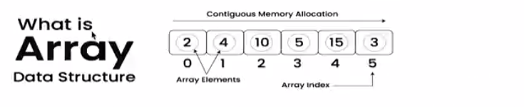
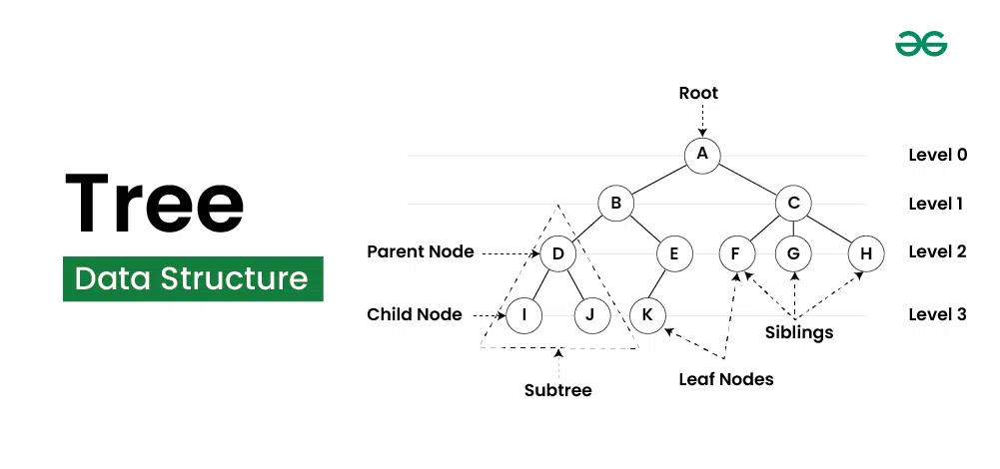
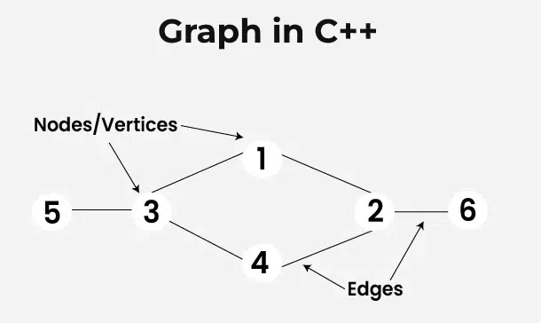

Introduction to C++
C++ is a powerful, high-performance, general-purpose programming language. Developed by Bjarne Stroustrup at Bell Labs in 1979, it was originally called "C with Classes"
Features of C++
- Fast Execution: As a compiled language, C++ code is converted directly into machine code for near-native performance.
- Direct Hardware Access: Provides Pointers to interact directly with memory addresses.
- Object-Oriented Programming (OOP): Focuses on "objects" and "classes" to model real-world problems.
- Generic Programming: Uses Templates to write code that works with any data type without duplication.
- Standard Template Library (STL): Provides a collection of reusable components for common data structures and algorithms.
Basic Syntax
#include <iostream>
using namespace std;
int main() {
cout << "Hello World!";
return 0;
}
- #include
is a header file library that lets us work with input and output objects, such as cout (used in line 5). Header files add functionality to C++ programs. - using namespace std means that we can use names for objects and variables from the standard library.
- A blank line. C++ ignores white space. But we use it to make the code more readable.
- Another thing that always appear in a C++ program is int main(). This is called a function. Any code inside its curly brackets {} will be executed.
- cout (pronounced "see-out") is an object used together with the insertion operator (<<) to output/print text. In our example, it will output "Hello World!".
Online C++ Compiler
Introduction to Arrays
What is an Array?
An array is a collection of items stored at contiguous memory locations. The idea is to store multiple items of the same type together.

Characteristics of Arrays
- Fixed Size: The size of an array must be defined at the time of declaration and cannot be changed later.
- Homogeneous Elements: All elements in an array must be of the same data type.
- Contiguous Memory: Elements are stored in contiguous memory locations, allowing for efficient access.
- Zero-Based Indexing: The first element of an array is accessed with index 0, the second with index 1, and so on.
Types of Arrays
- One-Dimensional Array:A linear list of elements stored in contiguous memory. Each element is accessed using a single index.
- Example: int marks[5] = {90, 85, 77, 92, 88};
- Multi-Dimensional Array: An array of arrays, where each element is itself an array. This allows for the representation of data in a tabular form.
- Example: int matrix[3][3] = {{1, 2, 3}, {4, 5, 6}, {7, 8, 9}};
- The size is determined at runtime and can be adjusted (grown or shrunk).
Tutorial for Arrays
Introduction to Trees
Tree Data Structure is a non-linear data structure in which a collection of elements known as nodes are connected to each other via edges such that there exists exactly one path between any two nodes.

Characteristics of Trees
- Hierarchical Layout: Organizes data across multiple levels instead of a sequential line.
- Root Node: The single topmost node that has no parent and acts as the entry point.
- Parent-Child Bond: Every node (except the root) has exactly one parent node, while a parent can have multiple child nodes.
- No Cycles: A tree is a connected graph with no loops; there is exactly one path between any two nodes.
- Recursive Nature: Each node in a tree can be viewed as the root of its own smaller tree, called a subtree.
Types Of Trees
- Binary Tree: Nodes have at most two children.
- Binary Search Tree (BST): Ordered binary tree.
- AVL Tree: Self-balancing binary search tree.
- Red-Black Tree: Self-balancing binary search tree with additional properties.
- N-ary Tree: Each node can have at most n children.
Applications of Trees
- File Systems: Operating systems use trees to organize files and folders. Each directory is a node that can contain sub-directories (children) and files (leaves).
- Database Indexing: Databases use specialized trees like B-Trees and B+ Trees to store and retrieve large datasets from disks in time.
- Compiler Design: Compilers use Abstract Syntax Trees (ASTs) and Expression Trees to parse source code, validate syntax, and evaluate mathematical expressions.
- Network Routing: Routers use tree-based structures (like Tries) to store routing tables and perform fast IP prefix matching.
- Document Object Model (DOM): Browsers represent HTML/XML pages as trees, where the tag is the root and other elements are nested children.
Tutorial for Trees
Introduction to Graphs
In C++, a graph is a non-linear data structure consisting of vertices (nodes) and edges (connections). You can represent graphs in code using either an Adjacency List (for memory efficiency) or an Adjacency Matrix (for fast edge lookups).

Characteristics of Graphs
- Vertices (Nodes): The fundamental entities storing data (e.g., city names, user IDs).
- Edges (Arcs): The lines connecting two vertices, representing a relationship.
- Weights: Numerical values assigned to edges to represent cost, distance, or time.
- Undirected Graph: Edges have no orientation; the connection is bidirectional (e.g., Facebook friendships).
- Directed Graph: Edges have an orientation; the connection is unidirectional (e.g., web links).
Types of Graphs
- Undirected Graph: Edges have no direction; the relationship is bidirectional ().
- Directed Graph (Digraph): Edges have a specific direction, indicating a one-way relationship ().
- Weighted Graph: Edges have weights assigned to them, representing costs or distances.
- Unweighted Graph: Edges do not have weights assigned to them.
- Connected Graph: There is a path between every pair of vertices.
- Disconnected Graph: There are vertices that are not connected to the rest of the graph.
Applications of Graphs
- Social Networks: Platforms like Facebook use graphs where users are nodes and friendships are edges to suggest mutual friends.
- Navigation & GPS: Google Maps represents road intersections as nodes and roads as edges to calculate the shortest path.
- Web Crawling: Search engines view web pages as nodes and hyperlinks as edges to rank and index the internet.
- Network Analysis: Graphs are used to analyze relationships in various domains, such as biology (protein interactions) or marketing (customer behavior).